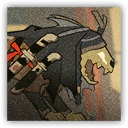
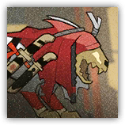

|
 |
捏出来的。「睚」随手捏塑的造物。躯体与黄沙同色，听觉极其敏锐，穿街过巷如影随形。 探子。谛兽负责情报的收集与传递。它们先听见你，再看见你。 |
| AC 14 | 先攻 +5（15） |
| HP 45（6d8+18） | |
| 速度 40 尺 | |
| 调整 | 豁免 | 调整 | 豁免 | 调整 | 豁免 | |||||||||
|---|---|---|---|---|---|---|---|---|---|---|---|---|---|---|
| 力量 | 14 | +2 | +2 | 敏捷 | 16 | +3 | +2 | 体质 | 15 | +2 | +2 | |||
| 智力 | 4 | -3 | -3 | 感知 | 16 | +3 | +3 | 魅力 | 7 | -2 | -2 |
| 技能 察觉+6，隐匿+5 |
| 感官 盲视30尺；被动察觉16 |
| 语言 理解炎国語但不能说 |
| CR 2（XP 450；PB +2） |
|
 |
洗出凶意。同样是「睚」捏塑的造物，只是这一头被黄沙洗练出了凶意。 也负责传信。躁怒谛兽照样收集与传递情报，同时参与战斗。它咬人的时候不叫。 |
| AC 15 | 先攻 +5（15） |
| HP 60（8d8+24） | |
| 速度 40 尺 | |
| 调整 | 豁免 | 调整 | 豁免 | 调整 | 豁免 | |||||||||
|---|---|---|---|---|---|---|---|---|---|---|---|---|---|---|
| 力量 | 15 | +2 | +2 | 敏捷 | 16 | +3 | +2 | 体质 | 16 | +3 | +3 | |||
| 智力 | 4 | -3 | -3 | 感知 | 16 | +3 | +3 | 魅力 | 8 | -1 | -1 |
| 技能 察觉+6，威吓+5 |
| 感官 盲视30尺；被动察觉16 |
| 语言 理解炎国語但不能说 |
| CR 3（XP 700；PB +2） |